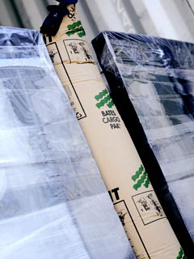

Dunnage bags for cargo protection: Your cargo - our commitment
At Bates Cargo-Pak we have built up an exceptional know-how within cargo protection.
We refine and develop dunnage bags for cargo protection and securing transport on an ongoing basis so that product quality and safety are always top-notch. We understand the demand for quick and reliable delivery of dunnage bags, as well as a high level of service.
Dunnage bags for cargo protection saves your money
With dunnage bags for cargo protection from Bates Cargo-Pak you can protect your cargo and save money on expensive compensations.
